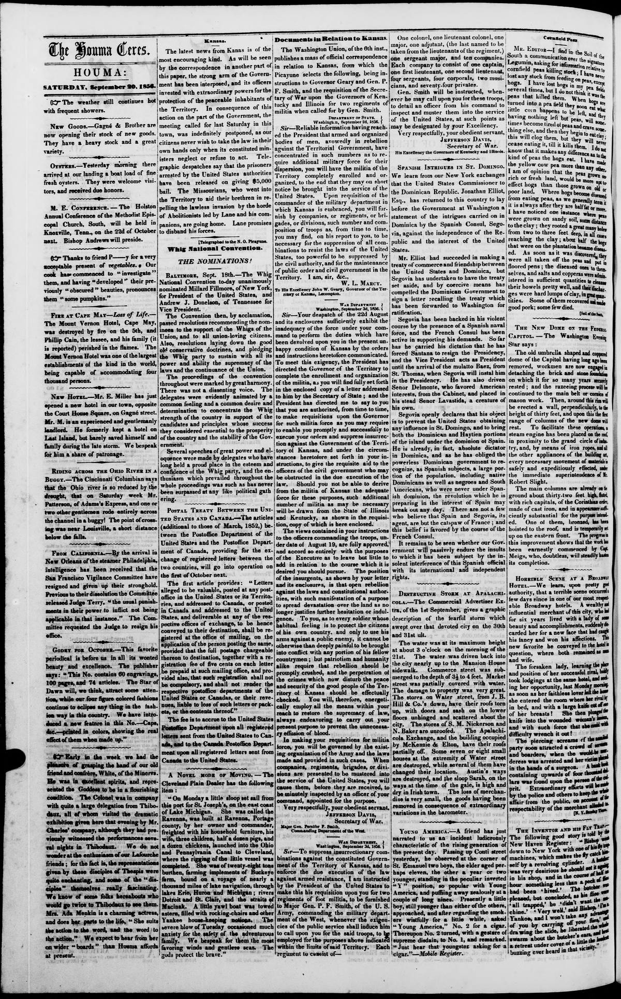

So far has he ?arried his dictation that he has forced
https://www.loc.gov/resource/sn83026391/1856-09-20/ed-1/?sp=2

See the original pageVer la página original
The Houma Ceres reported that Spanish agent Segovia, backed by Spanish naval vessels and French diplomatic support, forced the Dominican government to recall a treaty pending in Washington. Segovia compelled President Santana to resign in favor of Buenaventura Báez and replaced pro-American cabinet members with his own allies. The report warned that Segovia was registering Dominicans as Spanish subjects to bring the entire island under Spanish rule and exclude American influence.
El Houma Ceres informó que el agente español Segovia, respaldado por buques de guerra hispanos y el concurso diplomático francés, forzó al gobierno dominicano a retirar un tratado pendiente de ratificación en Washington. Segovia conminó al presidente Santana a dimitir en favor de Buenaventura Báez y sustituyó a los secretarios proclives a Estados Unidos por adictos a su causa. La noticia alertaba de que Segovia matriculaba a ciudadanos dominicanos como súbditos de la corona española con la mira de reincorporar toda la isla a la dominación de España y proscribir el predicamento norteamericano.
Where this standsEn qué punto está
The full text of this article is still being prepared. Until it is ready, this page carries a summary, the passage found on the page, and the link to the original, which is always one click away.El texto completo de este artículo aún se está preparando. Hasta que esté listo, esta página lleva un resumen, el pasaje encontrado en la página y el enlace al original, que siempre está a un clic.
From the original pageDe la página original
The passage where this article was found, copied from the newspaper page itself, reading errors and all. This is exactly what the summary above is based on.El pasaje donde se encontró este artículo, copiado de la propia página del periódico, con sus errores de lectura y todo. Esto es exactamente aquello en lo que se basa el resumen de arriba.
compelled the Dominican Government to
sign a letter recalling the treaty which
has been forwarded to Washington forl
ratification.
Segovia has been backed in his violent
course by the presence of a Spanish naval
force, and the French Consul has been
active in supporting his demands. So far
has he ?arried his dictation that he has
forced Santana to resign the Presidency,
and the Vice President acts as President
until the arrival of the mulatto Baez, fromi
St. Thomas, when Segovia will instal him
in the Presidency. He has also driven
Senor Delmonte, who favored American
interests, from the Cabinet, and placed in
his stead Senor Lavastida, a creature ofi
his own.
Segovia openly declares that his object
is to prevent the United States obtaining
any influence in St. Domingo. and to bring
'both the Dominican and Haytien portions
of the island under the dominion of Spain.,
He is already, in fact, absolute dictator
in Dominica, and as he has obliged the
powerless Dominican government to re
cognize, as Spanish subjects, a large por
tion of the population, including native
Dominicans as well as negroes and South
\mericans, who were never under Span.
ish dominion, the revolution which he is
preparing in the interest of Spain may
break out any day. There are not a few
who believe that Spain and Segovia, its
agent, are but the catspaw of France; and
this belief is favored by the coarse of the
French Consul.
It remains to be seen whether our Gov.
ernment wit passively endure the insults
to which it has been subject by the in
How to cite this articleCómo citar este artículo
Houma Ceres. (1856). Houma, Parish of Terrebonne, La., September 20, 185620 de septiembre de 1856. DR in the American PressRD en la Prensa Norteamericana. Library of Congress, Chronicling America: https://www.loc.gov/resource/sn83026391/1856-09-20/ed-1/?sp=2
ReferencesReferencias
Library of Congress, Chronicling America: Houma Ceres, September 20, 185620 de septiembre de 1856.
Send an observationEnviar una observación
Does this article connect with your family, your town, or something you know? Did we get something wrong? Write to us. Observations go to the editor's inbox and are read by a person.¿Este artículo conecta con su familia, su pueblo o algo que usted conoce? ¿Nos equivocamos en algo? Escríbanos. Las observaciones llegan al buzón del editor y las lee una persona.
Send observationEnviar observación